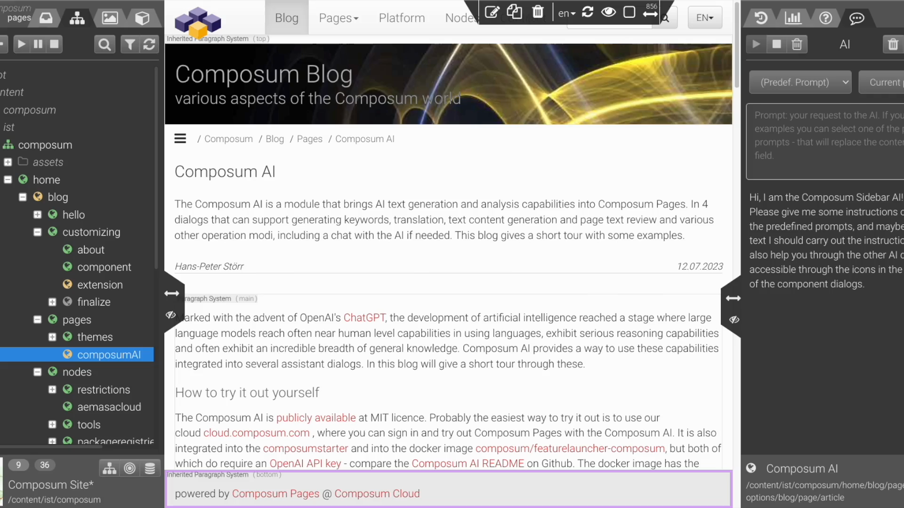

Usage of the Composum AI for Composum Pages
- A quick demo
- How to access the Composum AI
- The assistants
- The page category assistant
- The Sidebar AI
- Conclusion
The advance of generative artificial intelligence (AI) for texts has revolutionized content creation, providing new opportunities and efficiencies for content management systems (CMS) like Composum Pages. With the emergence of tools like Composum AI, the power of AI can now be harnessed to support content creation in a way that was not possible before.
Integrated into the Composum Pages UI, the Composum AI offers assistance for translation, content creation or SEO. Especially the content creation assistant provides a flexible, yet simple to use power that can support for many tasks like summarizing, expanding, creating headlines, rewriting text or generating excerpts from text, generating ideas or even answering questions about a page.
The translation assistant simplifies the process of translating text attributes into different languages. With just a few clicks, users can access the Translation Dialog within Composum Pages to view and manage translations for various languages. This feature streamlines the localization process and enhances the user experience for multilingual websites.
The category assistant helps with selecting SEO keywords based on the content of a page. By providing intelligent suggestions and options for categorizing pages, Composum AI optimizes the SEO potential of each page, improving its visibility and search engine rankings.
The integration of generative AI into Composum Pages empowers content creators to generate and optimize content more efficiently. Technical details, specifications and so forth you can find on the project's Github repository.
A quick demo

How to access the Composum AI
When editing the components in Composum, there are a couple of icons that are present in the title of the fields of the component. A click on one of these icons opens the corresponding dialog.
- Content Creation Assistant: For text fields the content creation assistant offers its help.
- Sidebar AI: The sidebar AI can support you by reviewing the text of the page under various aspects, find typos or answer questions in a chat.
- Translation assistant: If for the given field there is a text in one or more different languages, the translation assistant icon is available.
- Page category assistant: When editing page properties, the page category assistant suggests SEO keywords based on the content of the page.
The assistants
The translation assistant
The Translation Dialog is a feature in Composum Pages that allows users to easily translate text attributes into different languages. When editing a page, users may encounter a text field with a translation icon. By clicking on this icon, the Translation Dialog opens. In the dialog, users can see the texts for all languages that have translations for the selected attribute. If there is only one source language, the translation request is triggered immediately. Users can review the translated text, and then choose to accept it (which populates the text field) or cancel the operation. The dialog includes elements such as a source language selector, a translation display area, accept and cancel buttons, an error message display, and a loading indicator. The Translation Dialog aims to provide a user-friendly and intuitive way for users to efficiently manage translations of text attributes in Composum Pages.
The page category assistant
The page category assistant displays the current categories along with suggestions of the AI. After the AI suggestions have been generated, you can select or deselect current categories and suggestions as needed, and then save or abort. If you feel the need to add further categories or edit them, please select ‘Accept’ and use the original page properties dialog for further modification. The page categories can then enhance the SEO potential of the page.
The content creation assistant
This dialog is probably the most powerful and flexible tool Composum AI offers. The user is able to provide a prompt that describes what content should be generated and how it should look like, and can select a source from which to generate. It is possible to select one of a number of predefined prompts and use them as they are or refine them as needed. A press of the “Generate” button triggers the content generation. It's possible to edit the generated text or switch back and forth in a history of generated content for this field, to select the best attempt.
There is also an optional dropdown menu from which text length recommendations can be selected. Additionally, the dialog is resizable to accommodate large amounts of text, and it displays a loading indicator to indicate when the system is processing a prompt.
Text sources (base text)
Selecting one of these options replaces the ‘Source’ text area with the chosen text.
- Widget: The AI is provided with the text contained in the field you were editing.
- Component: The text content of the component you were editing, including subcomponents. Useful e.g. for suggesting headlines for components or sections.
- Current Page: The text content of the current page. Useful e.g. for writing summaries, introductions, page descriptions etc.
- Last Output: The current content suggestion shown in this dialog, for iterative improvement of a text.
- Hand edited content: You can provide your own text as a base for the AI to work with.
- No Text Added: If you like to generate text by just giving the AI some instructions that do not refer to any current text content, this is your choice.
Predefined prompts
The predefined prompts are valuable as they are, but please take them as an inspiration what you can do with the text. Some examples are:
- Summarize: The selected text is summarized.
- Introduction: The AI writes an introduction for the text.
- Conclusion: The AI writes a conclusion for the text.
- Expand: The AI uses the provided notes as inspiration to write a text that expresses the main ideas and themes present in a businesslike informative style.
- Headline: The AI writes a headline for the text in a businesslike informative style.
- 10 headline suggestions: The AI provides10 headline suggestions for the text in a businesslike informative style.
- 10 headline + subheadline suggestions: The AI provides10 headline and subheading suggestions for the text in a businesslike informative style.
- Question: The AI answers a question based on the given text.
- Improve: The AI improves the text into a businesslike informative style, fixing orthographical and grammar errors.
- SEO Description: The AI creates a description for a web page with the given text, usable for search engine optimization (SEO).
Tips and Tricks for using the Content Creation Assistant
To use the make an excerpt from or rewrite of an existing text, you can copy and paste that text into the existing dialog field and select the text field as base text, or paste it into the content suggestion field and select that as base text, and then specify in the prompt what you want to be done.
The dialog can be maximized to accomodate more text, and there is also a help window accessible with the “?” icon.
If you are not satisfied with the generated text, there are several ways to improve it:
- You can simply retry by pressing the “Generate” button again.
- You can add hints to the prompt how the text should be written. For example “Use passive voice and an informative style.” or “Make the text engaging and motivating.”
If you want to generate headlines for a component, you could select the component's text as base text and use the “10 suggestions for headline” prompt. Generally, to get ideas for short texts it can be a good idea to ask the AI to list a number of suggestions.
Even though that's not the primary use of the assistant, you can (creatively) use it to get answers from the AI about general questions, or have it use the page content to answer your questions. Just open the assistant on any text field in the page, use “current page text” as base text or even “no text” and ask away. Of course you might want to press " Cancel" after such use.
The Sidebar AI
The Sidebar AI can serve as a complementary addition to the content creation assistant. It's primary focus is not so much content creation, but to use the AI to generate reports about the text content of the page or individual components that can help you improve it, or provide you with the possibility to ask questions about it's responses in a chat format.
There is also a number of predefined prompts you could select, but you are invited to modify them or write your own requests to the AI. The dialog also has a history, which is specific to the displayed page.
Text sources (base text)
- Page: The text content of the current page.
- Component: The text content of the selected component including subcomponents.
- No additional source: If you like to discuss / chat without referring to any current text content, this is your choice.
Predefined prompts
We collected a number of prompts that might be useful for you when improving the text. As always, please feel free to extend / clarify / refine them, or to write your own requests. Among them are
- Review: The text is checked for good text flow, contradictions, repetitions, redundancy, etc.
- Content Flow: Checks for problems with the flow of the tex
- Question: The AI answers a question based on the provided text.
- 10 headline suggestions: Ten headline suggestions for the text are generated using a businesslike informative style.
- Summary: A brief summary of the main points and themes in the text is generated.
- Simplification Suggestions: Identifies parts of the text that could be simplified and provides alternative suggestions..
- CTA Suggestions: Five distinct call-to-action (CTA) phrases are suggested to motivate further engagement with the content or brand.
- Content Gap Analysis: Tries to identify relevant topics or subtopics that are not covered.
- Relevance Evaluation: The content of the text is evaluated to determine if it is relevant to a specific topic or purpose.
Using the Chat feature
In this dialog there are several ways to improve the result. It is possible to edit the prompt and resend it (or even just retry), and it is possible to use a chat to ask further questions about the response and have the AI elaborate. At the bottom of reach response appears a new prompt input field, where it's possible to continue in a conversation. There is, however, a limit in the length of conversations, so it's better to start fresh when the topic is changed. You can always go back using the history, and even continue the old conversation, which will be saved as a new history entry.
Conclusion
The Composum AI module brings you many new abilities for AI text generation and analysis to the AEM author, supported by large language models like ChatGPT in a seamless integration into Composum Pages. Please give it a try, tell us what you think, and enjoy using it creatively for your site!